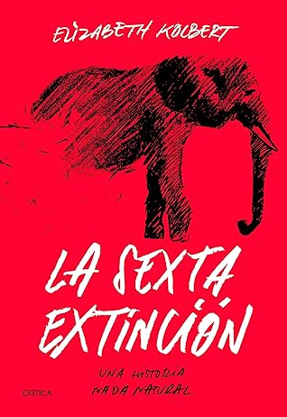

La sexta extinción: Una historia nada natural
Reseña por Jorge I. Zuluaga

Ver reseña en GoodReads (necesita cuenta)
El libro está escrito con el estilo de los artículos de la revista de la National Geographic (en efecto, algunos apartes como menciona la autora al final aparecieron en esta y otras publicaciones similares). Las descripciones giran alrededor de las “aventuras” que vive su autora, la periodista científica Elizabeth Kolbert en distintos lugares del planeta en los que las huellas de la extinción se hacen más evidentes. Cada historia-capítulo gira alrededor de una especie viva particular (que se extiende a veces a géneros completos), ranas, aves gigantes extintas, árboles, pólipos de coral, rinocerontes, etc. y concluye con dos especies claves: Homo neandarthalensis y Homo sapiens .
En medio de las experiencias y aventuras, la autora va presentando la ciencia detrás de la ecología de la extinción y los descubrimientos asociados a los casos particulares que describe de modo que a medida que se suceden los capítulos se va construyendo en la mente de quien lee el texto el panorama científico completo de el complejo proceso de surgimiento, desplazamiento, reemplazo y extinción de las especies, no solo en condiciones “normales” sino también en las condiciones extremas que se están produciendo en el presente.
En síntesis, no hay una presentación lineal de los temas, como la que encontrarías en un texto más académico, pero la sensación que queda al final del libro es la de comprender en sus rasgos generales el problema y al mismo tiempo entender que no es posible ponerlo en unas pocas explicaciones sencillas lo que es un proceso muy complejo.
Aunque por mi trabajo (astrónomo dedicado a la astrobiología) había leído ya literatura divulgativa y especializada en el tema, encontré en la lectura de “La sexta extinción” datos y formas de aproximarse al tema que me parecieron originales y enriquecidos por reflexiones personales de la autora y de las expertas y expertos con los que interactúa durante la preparación del libro.
Con todas estas características por qué no le pongo el máximo puntaje. Creo que el estilo de la autora, aunque apreciado en algunos círculos lectores como el Norteamericano, no necesariamente es agradable para lectores de todo el planeta. A mi personalmente, a pesar de todo lo que menciono arriba, no me termina de gustar completamente. Prefiero una exposición menos personal y no me gusta tanto las anécdotas específicas.
Leer este libro o apartes de él debería ser una obligación para muchos representantes de nuestra especie. Si bien es poco lo que como individuos podemos cambiar, saber lo que nuestras acciones colectivas, especialmente como sociedades globalizadas, está causando sobre toda la vida en el planeta, en un proceso que aunque comparable en intensidad a otras extinciones, tal vez no tenga parangón en la dilatada historia de la vida en la Tierra, nos puede al menos preparar para las consecuencias que tendrá en nuestras vidas esos cambios. Tal vez no seamos capaces de cambiar lo que está pasando (soy de la creencia que la responsabilidad está en quienes manejan los hilos de la sociedad a un nivel mucho más alto) pero entender puede cambiar nuestra relación con los eventos que están por venir, algunos de los cuales se anticipan en este libro.